Jääkiekkomailat puusta hiilikuituun
Jääkiekkomailat ovat kehittyneet puumailoista moderneihin hiilikuitumailoihin.
Jääkiekkomailojen historia ulottuu satojen vuosien taakse. Aluksi mailat olivat yksinkertaisia puusta tehtyjä välineitä. Ne olivat kestäviä, mutta melko painavia ja jäykkiä.
Pelaajat valitsivat mailan itse, ja jokainen maila oli hieman erilainen. Vähitellen mailojen muoto alkoi yhtenäistyä, jotta pelaaminen olisi helpompaa.
1900-luvulla alettiin käyttää uusia materiaaleja, kuten metallia ja myöhemmin muovia sekä komposiitteja. Tämä teki mailoista kevyempiä ja kestävämpiä. Myöhemmin markkinoille tulivat alumiini- ja komposiittimailat. Ne olivat kevyempiä ja tarkempia, mutta eivät aina tarjonneet hyvää tuntumaa kiekkoon.
Nykyään mailat valmistetaan usein hiilikuidusta. Ne ovat kevyitä, vahvoja ja suunniteltu eri pelaajille sopiviksi.
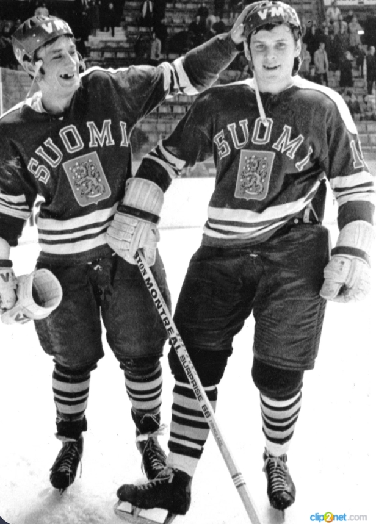
IIHF-sääntöjen mukaan mailan lavan kaarevuus ei saa ylittää 1,9 cm.
Lavan kaari vaikuttaa laukaukseen ja kiekon hallintaan.
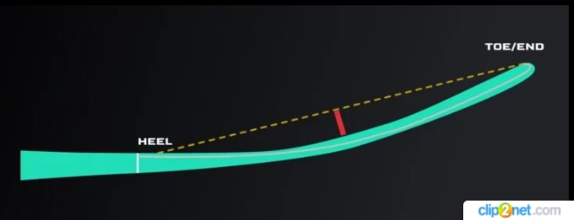
Grip auttaa mailan hallinnassa.
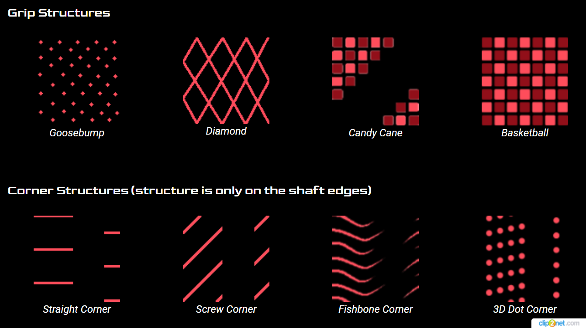
Flex kertoo, kuinka paljon maila taipuu.
Pehmeä maila helpottaa laukaisua, jäykkä antaa voimaa ja tarkkuutta.
Pelaajat voivat olla vasen- tai oikeakätisiä.
Naisten mailat ovat yleensä lyhyempiä ja kevyempiä.
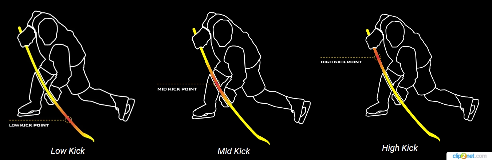
Lie tarkoittaa mailan kulmaa lavan ja varren välillä.
Oikea lie auttaa parempaan laukaukseen ja kiekon hallintaan.
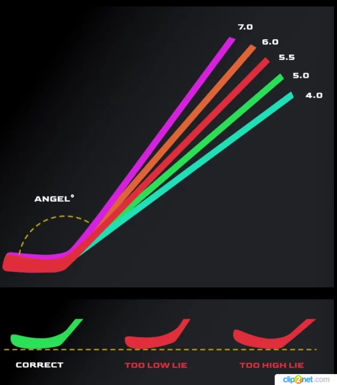
Monet tunnetut jääkiekkoilijat käyttävät eri mailoja pelityylinsä mukaan. Mailan valinta vaikuttaa laukaukseen, nopeuteen ja kiekon hallintaan. Esimerkiksi hyökkääjät suosivat usein kevyempiä ja nopeampia mailoja, kun taas voimakkaat pelaajat valitsevat jäykempiä mailoja tarkkuuden ja voiman vuoksi.
| Pelaaja | Joukkue | Maila | Ominaisuus |
|---|---|---|---|
| Ovechkin | Washington | Bauer Nexus | Voima ja laukaus |
| Crosby | Pittsburgh | CCM Ribcor | Kontrolli |
| Kane | Chicago | Bauer Vapor | Nopea laukaus |
| Stamkos | Tampa Bay | Bauer Supreme | Tarkkuus |
| Tavares | Toronto | CCM Tacks | Vakaa peli |
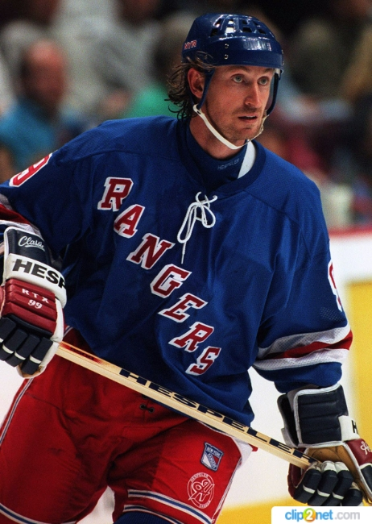
Wayne Gretzky
NHL:n kaikkien aikojen piste-ennätyksen haltija.
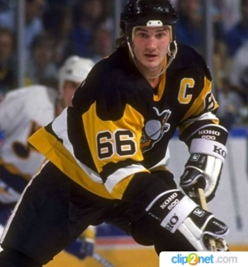
Mario Lemieux
Voima ja taito yhdessä pelaajassa.
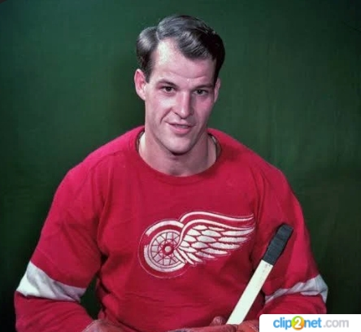
Gordie Howe
Monipuolinen pelaaja, joka loisti kaikilla pelin osa-alueilla.
Hänellä oli pitkä ura.
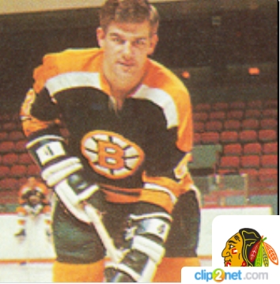
Bobby Orr
Paras puolustaja historiassa.
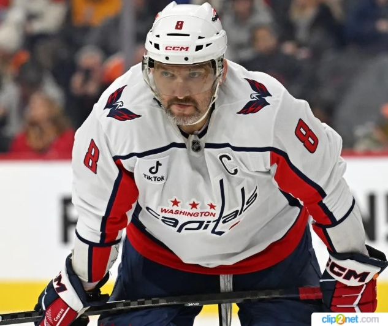
Alexander Ovechkin
Yksi parhaista maalintekijöistä.
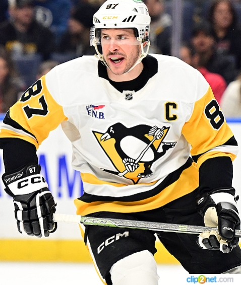
Sidney Crosby
Pittsburgh Penguinsin kapteeni ja yksi maailman parhaista
pelaajista.
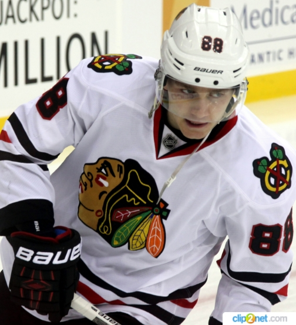
Patrick Kane
Tunnettu nopeudesta ja erinomaisesta kiekonkäsittelystä.
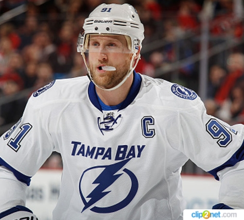
Steven Stamkos
Vahva laukaus ja tarkkuus, Tampa Bay Lightningin johtaja.
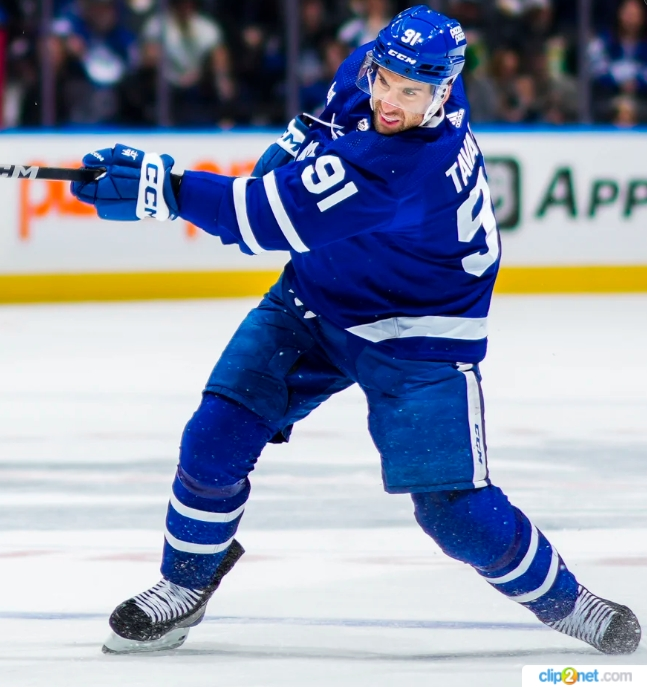
John Tavares
Tasainen ja älykäs keskushyökkääjä.
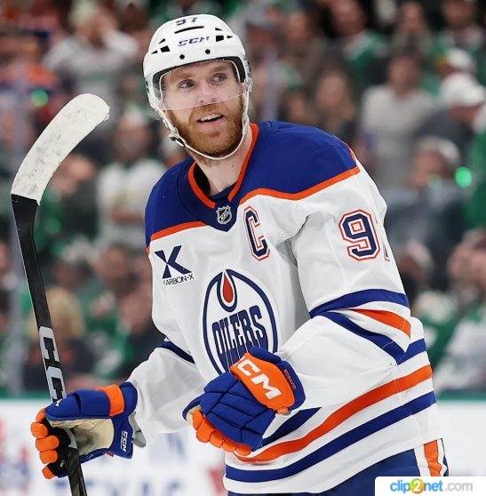
Connor McDavid
Yksi nopeimmista ja taitavimmista pelaajista NHL:ssä.
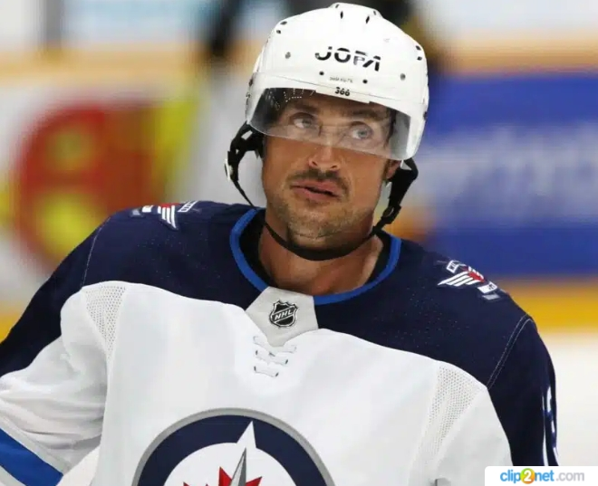
Teemu Selänne
Suomen legenda ja yksi kaikkien aikojen parhaista maalintekijöistä.